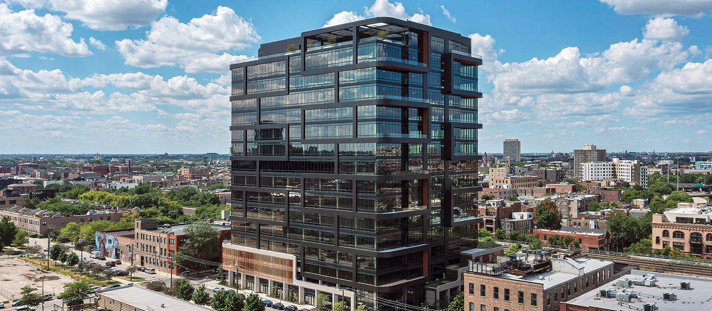
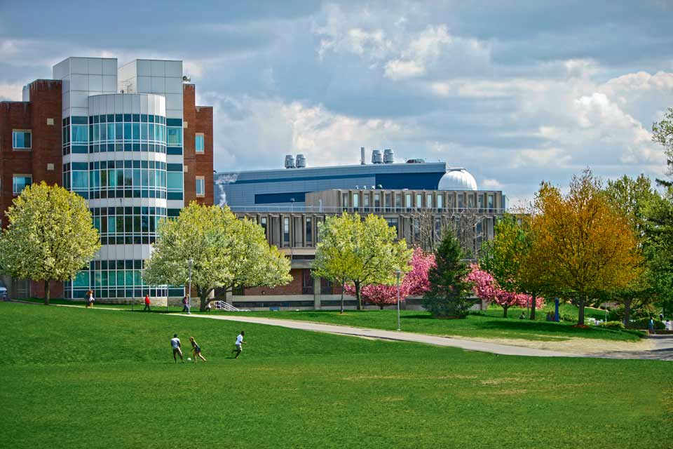
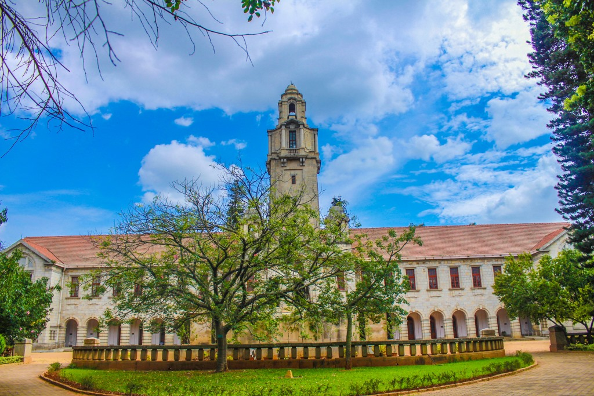
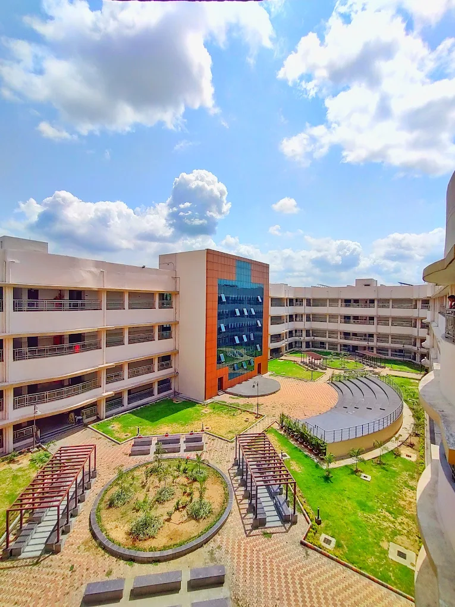

Scientist, Lab Automation & Instrumentation
Supervisor: Minjun Son · Microtissue Signaling Dynamics
Visiting Scientist: University of Chicago · Northwestern University · University of Illinois Urbana-Champaign
At the Chan Zuckerberg Biohub Chicago, a non-profit research institute founded to advance the engineering and measurement of human biology. The mission is to understand inflammation, the body's response to disease and injury, by building entirely new instruments and methods.
On the engineering team I design microfluidic platforms and automated instrumentation for studying dynamic biological systems, cell signaling, co-culture interactions, and responses to perturbation. The work combines hardware (valve manifolds, motion stages, fluidic circuits), software (Python-based GUI and control systems), and biological design. Each experiment is a system: chip, fluid, cells, imaging, and software, working together in real time. This is where all of my prior training converges.

Postdoctoral Research, Soft Matter & Biophysics
Supervisor: W. Benjamin Rogers · Rogers Lab
Brandeis shifted my focus from classical fluids to biological matter. I began working with DNA nanostars, synthetic molecules that undergo liquid-liquid phase separation to form biomolecular condensates. This is soft matter physics at its most programmable: by changing DNA sequences and valency, you tune the phase diagram. I learned the language of phase transitions, free energy landscapes, and material properties of living-like systems. The connection between evaporation-driven self-assembly and equilibrium phase separation became a central thread in my thinking.

PhD, Mechanical Engineering / Experimental Fluid Dynamics
Supervisor: Saptarshi Basu · Basu Lab
IISc was a transformation from simulation to experiment, from idealized systems to the messy, beautiful physics of real drops on real surfaces. My doctoral work centered on sessile droplets: how they evaporate, what flows develop inside them, how they interact through vapor fields, and what structures they leave behind. I built experiments from scratch, designed optical systems, wrote PIV analysis code, and spent years watching droplets under microscopes. Along the way, I studied colloidal self-assembly, crystallization in confined geometries, and the surprising patterns that emerge when bacteria replace passive particles. This period taught me that careful observation, done with enough patience and rigor, often reveals more than theory predicts.

M.Tech, Mechanical Engineering (Thermal and Fluids Engineering)
Supervisor: Ram Vinoy Sharma
This is where engineering thinking began. Thermodynamics, fluid mechanics, heat transfer, and the computational methods that simulate them. I learned to reason about physical systems from first principles, to set up governing equations, to think in terms of conservation laws and transport. CFD projects introduced me to the idea that complex phenomena could be decomposed, discretized, and solved. The tools were classical, but the instinct they built, a reflexive attention to energy, momentum, and mass balance, became permanent.
CFD Lab of Prof. S. Vengadesan, IIT Madras. Simulated rotor-stator turbulence in ANSYS Fluent. Certificate

B.E. in Mechanical Engineering, the undergraduate foundation beneath everything above. I graduated top of the class with a 9.23/10 GPA.
Senior secondary at Alva's PU College, Moodbidri, 88.33% with distinction.
Secondary at Don Bosco, Sirsi, 88% with distinction.
Both in coastal Karnataka.